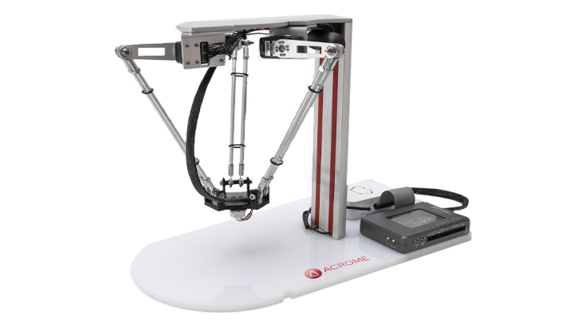

Robô Delta

O robô Delta é um robô industrial de alta velocidade formado por três braços conectados a uma base fixa. Seu projeto permite realizar movimentos muito rápidos e precisos, sendo ideal para aplicações que exigem grande produtividade e repetibilidade, especialmente na manipulação de objetos leves.
Princípio de Funcionamento
O robô Delta utiliza três braços articulados ligados a motores instalados na parte superior da estrutura. Os movimentos dos braços são sincronizados para posicionar a ferramenta com extrema rapidez e precisão dentro da área de trabalho.
Características Técnicas
- Alta velocidade de movimentação.
- Excelente precisão e repetibilidade.
- Estrutura leve.
- Ideal para pequenas cargas.
- Baixo tempo de ciclo.
- Grande eficiência em processos repetitivos.
Aplicações Industriais
- Embalagem de produtos.
- Separação de peças (Pick and Place).
- Indústria alimentícia.
- Indústria farmacêutica.
- Montagem de pequenos componentes.
- Classificação de produtos.
Integração com Automação e IoT
Os robôs Delta podem ser integrados a sensores, CLPs, sistemas supervisórios e plataformas de Internet das Coisas (IoT). Essa integração possibilita monitoramento em tempo real, análise de desempenho, manutenção preditiva e maior controle dos processos automatizados.
Modelos Comerciais
| Fabricante | Modelo |
|---|---|
| ABB | FlexPicker IRB 360 |
| FANUC | M-3iA |
| Omron | Quattro |
Imagens de Modelos Comerciais

FlexPicker IRB 360
ABB

M-3iA
FANUC

Quattro
Omron